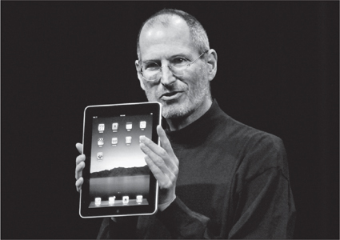
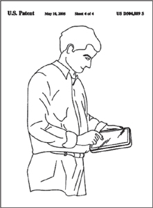

THE iPAD
Into the Post-PC Era

Back in 2002, Jobs had been annoyed by the Microsoft engineer who kept proselytizing about the tablet computer software he had developed, which allowed users to input information on the screen with a stylus or pen. A few manufacturers released tablet PCs that year using the software, but none made a dent in the universe. Jobs had been eager to show how it should be done right—no stylus!—but when he saw the multi-touch technology that Apple was developing, he had decided to use it first to make an iPhone.
In the meantime, the tablet idea was percolating within the Macintosh hardware group. "We have no plans to make a tablet," Jobs declared in an interview with Walt Mossberg in May 2003. "It turns out people want keyboards. Tablets appeal to rich guys with plenty of other PCs and devices already." Like his statement about having a "hormone imbalance," that was misleading; at most of his annual Top 100 retreats, the tablet was among the future projects discussed. "We showed the idea off at many of these retreats, because Steve never lost his desire to do a tablet," Phil Schiller recalled.
The tablet project got a boost in 2007 when Jobs was considering ideas for a low-cost netbook computer. At an executive team brainstorming session one Monday, Ive asked why it needed a keyboard hinged to the screen; that was expensive and bulky. Put the keyboard on the screen using a multi-touch interface, he suggested. Jobs agreed. So the resources were directed to revving up the tablet project rather than designing a netbook.
The process began with Jobs and Ive figuring out the right screen size. They had twenty models made—all rounded rectangles, of course—in slightly varying sizes and aspect ratios. Ive laid them out on a table in the design studio, and in the afternoon they would lift the velvet cloth hiding them and play with them. "That's how we nailed what the screen size was," Ive said.
As usual Jobs pushed for the purest possible simplicity. That required determining what was the core essence of the device. The answer: the display screen. So the guiding principle was that everything they did had to defer to the screen. "How do we get out of the way so there aren't a ton of features and buttons that distract from the display?" Ive asked. At every step, Jobs pushed to remove and simplify.
At one point Jobs looked at the model and was slightly dissatisfied. It didn't feel casual and friendly enough, so that you would naturally scoop it up and whisk it away. Ive put his finger, so to speak, on the problem: They needed to signal that you could grab it with one hand, on impulse. The bottom of the edge needed to be slightly rounded, so that you'd feel comfortable just scooping it up rather than lifting it carefully. That meant engineering had to design the necessary connection ports and buttons in a simple lip that was thin enough to wash away gently underneath.
If you had been paying attention to patent filings, you would have noticed the one numbered D504889 that Apple applied for in March 2004 and was issued fourteen months later. Among the inventors listed were Jobs and Ive. The application carried sketches of a rectangular electronic tablet with rounded edges, which looked just the way the iPad turned out, including one of a man holding it casually in his left hand while using his right index finger to touch the screen.

Since the Macintosh computers were now using Intel chips, Jobs initially planned to use in the iPad the low-voltage Atom chip that Intel was developing. Paul Otellini, Intel's CEO, was pushing hard to work together on a design, and Jobs's inclination was to trust him. His company was making the fastest processors in the world. But Intel was used to making processors for machines that plugged into a wall, not ones that had to preserve battery life. So Tony Fadell argued strongly for something based on the ARM architecture, which was simpler and used less power. Apple had been an early partner with ARM, and chips using its architecture were in the original iPhone. Fadell gathered support from other engineers and proved that it was possible to confront Jobs and turn him around. "Wrong, wrong, wrong!" Fadell shouted at one meeting when Jobs insisted it was best to trust Intel to make a good mobile chip. Fadell even put his Apple badge on the table, threatening to resign.
Eventually Jobs relented. "I hear you," he said. "I'm not going to go against my best guys." In fact he went to the other extreme. Apple licensed the ARM architecture, but it also bought a 150-person microprocessor design firm in Palo Alto, called P.A. Semi, and had it create a custom system-on-a-chip, called the A4, which was based on the ARM architecture and manufactured in South Korea by Samsung. As Jobs recalled:
At the high-performance end, Intel is the best. They build the fastest chip, if you don't care about power and cost. But they build just the processor on one chip, so it takes a lot of other parts. Our A4 has the processor and the graphics, mobile operating system, and memory control all in the chip. We tried to help Intel, but they don't listen much. We've been telling them for years that their graphics suck. Every quarter we schedule a meeting with me and our top three guys and Paul Otellini. At the beginning, we were doing wonderful things together. They wanted this big joint project to do chips for future iPhones. There were two reasons we didn't go with them. One was that they are just really slow. They're like a steamship, not very flexible. We're used to going pretty fast. Second is that we just didn't want to teach them everything, which they could go and sell to our competitors.
According to Otellini, it would have made sense for the iPad to use Intel chips. The problem, he said, was that Apple and Intel couldn't agree on price. Also, they disagreed on who would control the design. It was another example of Jobs's desire, indeed compulsion, to control every aspect of a product, from the silicon to the flesh.
The usual excitement that Jobs was able to gin up for a product launch paled in comparison to the frenzy that built for the iPad unveiling on January 27, 2010, in San Francisco. The Economist put him on its cover robed, haloed, and holding what was dubbed "the Jesus Tablet." The Wall Street Journal struck a similarly exalted note: "The last time there was this much excitement about a tablet, it had some commandments written on it."
As if to underscore the historic nature of the launch, Jobs invited back many of the old-timers from his early Apple days. More poignantly, James Eason, who had performed his liver transplant the year before, and Jeffrey Norton, who had operated on his pancreas in 2004, were in the audience, sitting with his wife, his son, and Mona Simpson.
Jobs did his usual masterly job of putting a new device into context, as he had done for the iPhone three years earlier. This time he put up a screen that showed an iPhone and a laptop with a question mark in between. "The question is, is there room for something in the middle?" he asked. That "something" would have to be good at web browsing, email, photos, video, music, games, and ebooks. He drove a stake through the heart of the netbook concept. "Netbooks aren't better at anything!" he said. The invited guests and employees cheered. "But we have something that is. We call it the iPad."
To underscore the casual nature of the iPad, Jobs ambled over to a comfortable leather chair and side table (actually, given his taste, it was a Le Corbusier chair and an Eero Saarinen table) and scooped one up. "It's so much more intimate than a laptop," he enthused. He proceeded to surf to the New York Times website, send an email to Scott Forstall and Phil Schiller ("Wow, we really are announcing the iPad"), flip through a photo album, use a calendar, zoom in on the Eiffel Tower on Google Maps, watch some video clips (Star Trek and Pixar's Up), show off the iBook shelf, and play a song (Bob Dylan's "Like a Rolling Stone," which he had played at the iPhone launch). "Isn't that awesome?" he asked.
With his final slide, Jobs emphasized one of the themes of his life, which was embodied by the iPad: a sign showing the corner of Technology Street and Liberal Arts Street. "The reason Apple can create products like the iPad is that we've always tried to be at the intersection of technology and liberal arts," he concluded. The iPad was the digital reincarnation of the Whole Earth Catalog, the place where creativity met tools for living.
For once, the initial reaction was not a Hallelujah Chorus. The iPad was not yet available (it would go on sale in April), and some who watched Jobs's demo were not quite sure what it was. An iPhone on steroids? "I haven't been this let down since Snooki hooked up with The Situation," wrote Newsweek's Daniel Lyons (who moonlighted as "The Fake Steve Jobs" in an online parody). Gizmodo ran a contributor's piece headlined "Eight Things That Suck about the iPad" (no multitasking, no cameras, no Flash ... ). Even the name came in for ridicule in the blogosphere, with snarky comments about feminine hygiene products and maxi pads. The hashtag "#iTampon" was the number-three trending topic on Twitter that day.
There was also the requisite dismissal from Bill Gates. "I still think that some mixture of voice, the pen and a real keyboard—in other words a netbook—will be the mainstream," he told Brent Schlender. "So, it's not like I sit there and feel the same way I did with the iPhone where I say, ‘Oh my God, Microsoft didn't aim high enough.' It's a nice reader, but there's nothing on the iPad I look at and say, ‘Oh, I wish Microsoft had done it.'" He continued to insist that the Microsoft approach of using a stylus for input would prevail. "I've been predicting a tablet with a stylus for many years," he told me. "I will eventually turn out to be right or be dead."
The night after his announcement, Jobs was annoyed and depressed. As we gathered in his kitchen for dinner, he paced around the table calling up emails and web pages on his iPhone.
I got about eight hundred email messages in the last twenty-four hours. Most of them are complaining. There's no USB cord! There's no this, no that. Some of them are like, "Fuck you, how can you do that?" I don't usually write people back, but I replied, "Your parents would be so proud of how you turned out." And some don't like the iPad name, and on and on. I kind of got depressed today. It knocks you back a bit.
He did get one congratulatory call that day that he appreciated, from President Obama's chief of staff, Rahm Emanuel. But he noted at dinner that the president had not called him since taking office.
The public carping subsided when the iPad went on sale in April and people got their hands on it. Both Time and Newsweek put it on the cover. "The tough thing about writing about Apple products is that they come with a lot of hype wrapped around them," Lev Grossman wrote in Time. "The other tough thing about writing about Apple products is that sometimes the hype is true." His main reservation, a substantive one, was "that while it's a lovely device for consuming content, it doesn't do much to facilitate its creation." Computers, especially the Macintosh, had become tools that allowed people to make music, videos, websites, and blogs, which could be posted for the world to see. "The iPad shifts the emphasis from creating content to merely absorbing and manipulating it. It mutes you, turns you back into a passive consumer of other people's masterpieces." It was a criticism Jobs took to heart. He set about making sure that the next version of the iPad would emphasize ways to facilitate artistic creation by the user.
Newsweek's cover line was "What's So Great about the iPad? Everything." Daniel Lyons, who had zapped it with his "Snooki" comment at the launch, revised his opinion. "My first thought, as I watched Jobs run through his demo, was that it seemed like no big deal," he wrote. "It's a bigger version of the iPod Touch, right? Then I got a chance to use an iPad, and it hit me: I want one." Lyons, like others, realized that this was Jobs's pet project, and it embodied all that he stood for. "He has an uncanny ability to cook up gadgets that we didn't know we needed, but then suddenly can't live without," he wrote. "A closed system may be the only way to deliver the kind of techno-Zen experience that Apple has become known for."
Most of the debate over the iPad centered on the issue of whether its closed end-to-end integration was brilliant or doomed. Google was starting to play a role similar to the one Microsoft had played in the 1980s, offering a mobile platform, Android, that was open and could be used by all hardware makers. Fortune staged a debate on this issue in its pages. "There's no excuse to be closed," wrote Michael Copeland. But his colleague Jon Fortt rebutted, "Closed systems get a bad rap, but they work beautifully and users benefit. Probably no one in tech has proved this more convincingly than Steve Jobs. By bundling hardware, software, and services, and controlling them tightly, Apple is consistently able to get the jump on its rivals and roll out polished products." They agreed that the iPad would be the clearest test of this question since the original Macintosh. "Apple has taken its control-freak rep to a whole new level with the A4 chip that powers the thing," wrote Fortt. "Cupertino now has absolute say over the silicon, device, operating system, App Store, and payment system."
Jobs went to the Apple store in Palo Alto shortly before noon on April 5, the day the iPad went on sale. Daniel Kottke—his acid-dropping soul mate from Reed and the early days at Apple, who no longer harbored a grudge for not getting founders' stock options—made a point of being there. "It had been fifteen years, and I wanted to see him again," Kottke recounted. "I grabbed him and told him I was going to use the iPad for my song lyrics. He was in a great mood and we had a nice chat after all these years." Powell and their youngest child, Eve, watched from a corner of the store.
Wozniak, who had once been a proponent of making hardware and software as open as possible, continued to revise that opinion. As he often did, he stayed up all night with the enthusiasts waiting in line for the store to open. This time he was at San Jose's Valley Fair Mall, riding a Segway. A reporter asked him about the closed nature of Apple's ecosystem. "Apple gets you into their playpen and keeps you there, but there are some advantages to that," he replied. "I like open systems, but I'm a hacker. But most people want things that are easy to use. Steve's genius is that he knows how to make things simple, and that sometimes requires controlling everything."
The question "What's on your iPad?" replaced "What's on your iPod?" Even President Obama's staffers, who embraced the iPad as a mark of their tech hipness, played the game. Economic Advisor Larry Summers had the Bloomberg financial information app, Scrabble, and The Federalist Papers. Chief of Staff Rahm Emanuel had a slew of newspapers, Communications Advisor Bill Burton had Vanity Fair and one entire season of the television series Lost, and Political Director David Axelrod had Major League Baseball and NPR.
Jobs was stirred by a story, which he forwarded to me, by Michael Noer on Forbes.com. Noer was reading a science fiction novel on his iPad while staying at a dairy farm in a rural area north of Bogotá, Colombia, when a poor six-year-old boy who cleaned the stables came up to him. Curious, Noer handed him the device. With no instruction, and never having seen a computer before, the boy started using it intuitively. He began swiping the screen, launching apps, playing a pinball game. "Steve Jobs has designed a powerful computer that an illiterate six-year-old can use without instruction," Noer wrote. "If that isn't magical, I don't know what is."
In less than a month Apple sold one million iPads. That was twice as fast as it took the iPhone to reach that mark. By March 2011, nine months after its release, fifteen million had been sold. By some measures it became the most successful consumer product launch in history.
Jobs was not happy with the original ads for the iPad. As usual, he threw himself into the marketing, working with James Vincent and Duncan Milner at the ad agency (now called TBWA/Media Arts Lab), with Lee Clow advising from a semiretired perch. The commercial they first produced was a gentle scene of a guy in faded jeans and sweatshirt reclining in a chair, looking at email, a photo album, the New York Times, books, and video on an iPad propped on his lap. There were no words, just the background beat of "There Goes My Love" by the Blue Van. "After he approved it, Steve decided he hated it," Vincent recalled. "He thought it looked like a Pottery Barn commercial." Jobs later told me:
It had been easy to explain what the iPod was—a thousand songs in your pocket—which allowed us to move quickly to the iconic silhouette ads. But it was hard to explain what an iPad was. We didn't want to show it as a computer, and yet we didn't want to make it so soft that it looked like a cute TV. The first set of ads showed we didn't know what we were doing. They had a cashmere and Hush Puppies feel to them.
James Vincent had not taken a break in months. So when the iPad finally went on sale and the ads started airing, he drove with his family to the Coachella Music Festival in Palm Springs, which featured some of his favorite bands, including Muse, Faith No More, and Devo. Soon after he arrived, Jobs called. "Your commercials suck," he said. "The iPad is revolutionizing the world, and we need something big. You've given me small shit."
"Well, what do you want?" Vincent shot back. "You've not been able to tell me what you want."
"I don't know," Jobs said. "You have to bring me something new. Nothing you've shown me is even close."
Vincent argued back and suddenly Jobs went ballistic. "He just started screaming at me," Vincent recalled. Vincent could be volatile himself, and the volleys escalated.
When Vincent shouted, "You've got to tell me what you want," Jobs shot back, "You've got to show me some stuff, and I'll know it when I see it."
"Oh, great, let me write that on my brief for my creative people: I'll know it when I see it."
Vincent got so frustrated that he slammed his fist into the wall of the house he was renting and put a large dent in it. When he finally went outside to his family, sitting by the pool, they looked at him nervously. "Are you okay?" his wife finally asked.
It took Vincent and his team two weeks to come up with an array of new options, and he asked to present them at Jobs's house rather than the office, hoping that it would be a more relaxed environment. Laying storyboards on the coffee table, he and Milner offered twelve approaches. One was inspirational and stirring. Another tried humor, with Michael Cera, the comic actor, wandering through a fake house making funny comments about the way people could use iPads. Others featured the iPad with celebrities, or set starkly on a white background, or starring in a little sitcom, or in a straightforward product demonstration.
After mulling over the options, Jobs realized what he wanted. Not humor, nor a celebrity, nor a demo. "It's got to make a statement," he said. "It needs to be a manifesto. This is big." He had announced that the iPad would change the world, and he wanted a campaign that reinforced that declaration. Other companies would come out with copycat tablets in a year or so, he said, and he wanted people to remember that the iPad was the real thing. "We need ads that stand up and declare what we have done."
He abruptly got out of his chair, looking a bit weak but smiling. "I've got to go have a massage now," he said. "Get to work."
So Vincent and Milner, along with the copywriter Eric Grunbaum, began crafting what they dubbed "The Manifesto." It would be fast-paced, with vibrant pictures and a thumping beat, and it would proclaim that the iPad was revolutionary. The music they chose was Karen O's pounding refrain from the Yeah Yeah Yeahs'" Gold Lion." As the iPad was shown doing magical things, a strong voice declared, "iPad is thin. iPad is beautiful... . It's crazy powerful. It's magical... . It's video, photos. More books than you could read in a lifetime. It's already a revolution, and it's only just begun."
Once the Manifesto ads had run their course, the team again tried something softer, shot as day-in-the-life documentaries by the young filmmaker Jessica Sanders. Jobs liked them—for a little while. Then he turned against them for the same reason he had reacted against the original Pottery Barn–style ads. "Dammit," he shouted, "they look like a Visa commercial, typical ad agency stuff."
He had been asking for ads that were different and new, but eventually he realized he did not want to stray from what he considered the Apple voice. For him, that voice had a distinctive set of qualities: simple, declarative, clean. "We went down that lifestyle path, and it seemed to be growing on Steve, and suddenly he said, ‘I hate that stuff, it's not Apple,'" recalled Lee Clow. "He told us to get back to the Apple voice. It's a very simple, honest voice." And so they went back to a clean white background, with just a close-up showing off all the things that "iPad is ..." and could do.
The iPad commercials were not about the device, but about what you could do with it. Indeed its success came not just from the beauty of the hardware but from the applications, known as apps, that allowed you to indulge in all sorts of delightful activities. There were thousands—and soon hundreds of thousands—of apps that you could download for free or for a few dollars. You could sling angry birds with the swipe of your finger, track your stocks, watch movies, read books and magazines, catch up on the news, play games, and waste glorious amounts of time. Once again the integration of the hardware, software, and store made it easy. But the apps also allowed the platform to be sort of open, in a very controlled way, to outside developers who wanted to create software and content for it—open, that is, like a carefully curated and gated community garden.
The apps phenomenon began with the iPhone. When it first came out in early 2007, there were no apps you could buy from outside developers, and Jobs initially resisted allowing them. He didn't want outsiders to create applications for the iPhone that could mess it up, infect it with viruses, or pollute its integrity.
Board member Art Levinson was among those pushing to allow iPhone apps. "I called him a half dozen times to lobby for the potential of the apps," he recalled. If Apple didn't allow them, indeed encourage them, another smartphone maker would, giving itself a competitive advantage. Apple's marketing chief Phil Schiller agreed. "I couldn't imagine that we would create something as powerful as the iPhone and not empower developers to make lots of apps," he recalled. "I knew customers would love them." From the outside, the venture capitalist John Doerr argued that permitting apps would spawn a profusion of new entrepreneurs who would create new services.
Jobs at first quashed the discussion, partly because he felt his team did not have the bandwidth to figure out all of the complexities that would be involved in policing third-party app developers. He wanted focus. "So he didn't want to talk about it," said Schiller. But as soon as the iPhone was launched, he was willing to hear the debate. "Every time the conversation happened, Steve seemed a little more open," said Levinson. There were freewheeling discussions at four board meetings.
Jobs soon figured out that there was a way to have the best of both worlds. He would permit outsiders to write apps, but they would have to meet strict standards, be tested and approved by Apple, and be sold only through the iTunes Store. It was a way to reap the advantage of empowering thousands of software developers while retaining enough control to protect the integrity of the iPhone and the simplicity of the customer experience. "It was an absolutely magical solution that hit the sweet spot," said Levinson. "It gave us the benefits of openness while retaining end-to-end control."
The App Store for the iPhone opened on iTunes in July 2008; the billionth download came nine months later. By the time the iPad went on sale in April 2010, there were 185,000 available iPhone apps. Most could also be used on the iPad, although they didn't take advantage of the bigger screen size. But in less than five months, developers had written twenty-five thousand new apps that were specifically configured for the iPad. By July 2011 there were 500,000 apps for both devices, and there had been more than fifteen billion downloads of them.
The App Store created a new industry overnight. In dorm rooms and garages and at major media companies, entrepreneurs invented new apps. John Doerr's venture capital firm created an iFund of $200 million to offer equity financing for the best ideas. Magazines and newspapers that had been giving away their content for free saw one last chance to put the genie of that dubious business model back into the bottle. Innovative publishers created new magazines, books, and learning materials just for the iPad. For example, the high-end publishing house Callaway, which had produced books ranging from Madonna's Sex to Miss Spider's Tea Party, decided to "burn the boats" and give up print altogether to focus on publishing books as interactive apps. By June 2011 Apple had paid out $2.5 billion to app developers.
The iPad and other app-based digital devices heralded a fundamental shift in the digital world. Back in the 1980s, going online usually meant dialing into a service like AOL, CompuServe, or Prodigy that charged fees for access to a carefully curated walled garden filled with content plus some exit gates that allowed braver users access to the Internet at large. The second phase, beginning in the early 1990s, was the advent of browsers that allowed everyone to freely surf the Internet using the hypertext transfer protocols of the World Wide Web, which linked billions of sites. Search engines arose so that people could easily find the websites they wanted. The release of the iPad portended a new model. Apps resembled the walled gardens of old. The creators could charge fees and offer more functions to the users who downloaded them. But the rise of apps also meant that the openness and linked nature of the web were sacrificed. Apps were not as easily linked or searchable. Because the iPad allowed the use of both apps and web browsing, it was not at war with the web model. But it did offer an alternative, for both the consumers and the creators of content.
With the iPod, Jobs had transformed the music business. With the iPad and its App Store, he began to transform all media, from publishing to journalism to television and movies.
Books were an obvious target, since Amazon's Kindle had shown there was an appetite for electronic books. So Apple created an iBooks Store, which sold electronic books the way the iTunes Store sold songs. There was, however, a slight difference in the business model. For the iTunes Store, Jobs had insisted that all songs be sold at one inexpensive price, initially 99 cents. Amazon's Jeff Bezos had tried to take a similar approach with ebooks, insisting on selling them for at most $9.99. Jobs came in and offered publishers what he had refused to offer record companies: They could set any price they wanted for their wares in the iBooks Store, and Apple would take 30%. Initially that meant prices were higher than on Amazon. Why would people pay Apple more? "That won't be the case," Jobs answered, when Walt Mossberg asked him that question at the iPad launch event. "The price will be the same." He was right.
The day after the iPad launch, Jobs described to me his thinking on books:
Amazon screwed it up. It paid the wholesale price for some books, but started selling them below cost at $9.99. The publishers hated that—they thought it would trash their ability to sell hardcover books at $28. So before Apple even got on the scene, some booksellers were starting to withhold books from Amazon. So we told the publishers, "We'll go to the agency model, where you set the price, and we get our 30%, and yes, the customer pays a little more, but that's what you want anyway." But we also asked for a guarantee that if anybody else is selling the books cheaper than we are, then we can sell them at the lower price too. So they went to Amazon and said, "You're going to sign an agency contract or we're not going to give you the books."
Jobs acknowledged that he was trying to have it both ways when it came to music and books. He had refused to offer the music companies the agency model and allow them to set their own prices. Why? Because he didn't have to. But with books he did. "We were not the first people in the books business," he said. "Given the situation that existed, what was best for us was to do this akido move and end up with the agency model. And we pulled it off."
Right after the iPad launch event, Jobs traveled to New York in February 2010 to meet with executives in the journalism business. In two days he saw Rupert Murdoch, his son James, and the management of their Wall Street Journal; Arthur Sulzberger Jr. and the top executives at the New York Times; and executives at Time, Fortune, and other Time Inc. magazines. "I would love to help quality journalism," he later said. "We can't depend on bloggers for our news. We need real reporting and editorial oversight more than ever. So I'd love to find a way to help people create digital products where they actually can make money." Since he had gotten people to pay for music, he hoped he could do the same for journalism.
Publishers, however, turned out to be leery of his lifeline. It meant that they would have to give 30% of their revenue to Apple, but that wasn't the biggest problem. More important, the publishers feared that, under his system, they would no longer have a direct relationship with their subscribers; they wouldn't have their email address and credit card number so they could bill them, communicate with them, and market new products to them. Instead Apple would own the customers, bill them, and have their information in its own database. And because of its privacy policy, Apple would not share this information unless a customer gave explicit permission to do so.
Jobs was particularly interested in striking a deal with the New York Times, which he felt was a great newspaper in danger of declining because it had not figured out how to charge for digital content. "One of my personal projects this year, I've decided, is to try to help—whether they want it or not—the Times," he told me early in 2010. "I think it's important to the country for them to figure it out."
During his New York trip, he went to dinner with fifty top Times executives in the cellar private dining room at Pranna, an Asian restaurant. (He ordered a mango smoothie and a plain vegan pasta, neither of which was on the menu.) There he showed off the iPad and explained how important it was to find a modest price point for digital content that consumers would accept. He drew a chart of possible prices and volume. How many readers would they have if the Times were free? They already knew the answer to that extreme on the chart, because they were giving it away for free on the web already and had about twenty million regular visitors. And if they made it really expensive? They had data on that too; they charged print subscribers more than $300 a year and had about a million of them. "You should go after the midpoint, which is about ten million digital subscribers," he told them. "And that means your digital subs should be very cheap and simple, one click and $5 a month at most."
When one of the Times circulation executives insisted that the paper needed the email and credit card information for all of its subscribers, even if they subscribed through the App Store, Jobs said that Apple would not give it out. That angered the executive. It was unthinkable, he said, for the Times not to have that information. "Well, you can ask them for it, but if they won't voluntarily give it to you, don't blame me," Jobs said. "If you don't like it, don't use us. I'm not the one who got you in this jam. You're the ones who've spent the past five years giving away your paper online and not collecting anyone's credit card information."
Jobs also met privately with Arthur Sulzberger Jr. "He's a nice guy, and he's really proud of his new building, as he should be," Jobs said later. "I talked to him about what I thought he ought to do, but then nothing happened." It took a year, but in April 2011 the Times started charging for its digital edition and selling some subscriptions through Apple, abiding by the policies that Jobs established. It did, however, decide to charge approximately four times the $5 monthly charge that Jobs had suggested.
At the Time-Life Building, Time's editor Rick Stengel played host. Jobs liked Stengel, who had assigned a talented team led by Josh Quittner to make a robust iPad version of the magazine each week. But he was upset to see Andy Serwer of Fortune there. Tearing up, he told Serwer how angry he still was about Fortune's story two years earlier revealing details of his health and the stock options problems. "You kicked me when I was down," he said.
The bigger problem at Time Inc. was the same as the one at the Times: The magazine company did not want Apple to own its subscribers and prevent it from having a direct billing relationship. Time Inc. wanted to create apps that would direct readers to its own website in order to buy a subscription. Apple refused. When Time and other magazines submitted apps that did this, they were denied the right to be in the App Store.
Jobs tried to negotiate personally with the CEO of Time Warner, Jeff Bewkes, a savvy pragmatist with a no-bullshit charm to him. They had dealt with each other a few years earlier over video rights for the iPod Touch; even though Jobs had not been able to convince him to do a deal involving HBO's exclusive rights to show movies soon after their release, he admired Bewkes's straight and decisive style. For his part, Bewkes respected Jobs's ability to be both a strategic thinker and a master of the tiniest details. "Steve can go readily from the overarching principals into the details," he said.
When Jobs called Bewkes about making a deal for Time Inc. magazines on the iPad, he started off by warning that the print business "sucks," that "nobody really wants your magazines," and that Apple was offering a great opportunity to sell digital subscriptions, but "your guys don't get it." Bewkes didn't agree with any of those premises. He said he was happy for Apple to sell digital subscriptions for Time Inc. Apple's 30% take was not the problem. "I'm telling you right now, if you sell a sub for us, you can have 30%," Bewkes told him.
"Well, that's more progress than I've made with anybody," Jobs replied.
"I have only one question," Bewkes continued. "If you sell a subscription to my magazine, and I give you the 30%, who has the subscription—you or me?"
"I can't give away all the subscriber info because of Apple's privacy policy," Jobs replied.
"Well, then, we have to figure something else out, because I don't want my whole subscription base to become subscribers of yours, for you to then aggregate at the Apple store," said Bewkes. "And the next thing you'll do, once you have a monopoly, is come back and tell me that my magazine shouldn't be $4 a copy but instead should be $1. If someone subscribes to our magazine, we need to know who it is, we need to be able to create online communities of those people, and we need the right to pitch them directly about renewing."
Jobs had an easier time with Rupert Murdoch, whose News Corp. owned the Wall Street Journal, New York Post, newspapers around the world, Fox Studios, and the Fox News Channel. When Jobs met with Murdoch and his team, they also pressed the case that they should share ownership of the subscribers that came in through the App Store. But when Jobs refused, something interesting happened. Murdoch is not known as a pushover, but he knew that he did not have the leverage on this issue, so he accepted Jobs's terms. "We would prefer to own the subscribers, and we pushed for that," recalled Murdoch. "But Steve wouldn't do a deal on those terms, so I said, ‘Okay, let's get on with it.' We didn't see any reason to mess around. He wasn't going to bend—and I wouldn't have bent if I were in his position—so I just said yes."
Murdoch even launched a digital-only daily newspaper, The Daily, tailored specifically for the iPad. It would be sold in the App Store, on the terms dictated by Jobs, at 99 cents a week. Murdoch himself took a team to Cupertino to show the proposed design. Not surprisingly, Jobs hated it. "Would you allow our designers to help?" he asked. Murdoch accepted. "The Apple designers had a crack at it," Murdoch recalled, "and our folks went back and had another crack, and ten days later we went back and showed them both, and he actually liked our team's version better. It stunned us."
The Daily, which was neither tabloidy nor serious, but instead a rather midmarket product like USA Today, was not very successful. But it did help create an odd-couple bonding between Jobs and Murdoch. When Murdoch asked him to speak at his June 2010 News Corp. annual management retreat, Jobs made an exception to his rule of never doing such appearances. James Murdoch led him in an after-dinner interview that lasted almost two hours. "He was very blunt and critical of what newspapers were doing in technology," Murdoch recalled. "He told us we were going to find it hard to get things right, because you're in New York, and anyone who's any good at tech works in Silicon Valley." This did not go down very well with the president of the Wall Street Journal Digital Network, Gordon McLeod, who pushed back a bit. At the end, McLeod came up to Jobs and said, "Thanks, it was a wonderful evening, but you probably just cost me my job." Murdoch chuckled a bit when he described the scene to me. "It ended up being true," he said. McLeod was out within three months.
In return for speaking at the retreat, Jobs got Murdoch to hear him out on Fox News, which he believed was destructive, harmful to the nation, and a blot on Murdoch's reputation. "You're blowing it with Fox News," Jobs told him over dinner. "The axis today is not liberal and conservative, the axis is constructive-destructive, and you've cast your lot with the destructive people. Fox has become an incredibly destructive force in our society. You can be better, and this is going to be your legacy if you're not careful." Jobs said he thought Murdoch did not really like how far Fox had gone. "Rupert's a builder, not a tearer-downer," he said. "I've had some meetings with James, and I think he agrees with me. I can just tell."
Murdoch later said he was used to people like Jobs complaining about Fox. "He's got sort of a left-wing view on this," he said. Jobs asked him to have his folks make a reel of a week of Sean Hannity and Glenn Beck shows—he thought that they were more destructive than Bill O'Reilly—and Murdoch agreed to do so. Jobs later told me that he was going to ask Jon Stewart's team to put together a similar reel for Murdoch to watch. "I'd be happy to see it," Murdoch said, "but he hasn't sent it to me."
Murdoch and Jobs hit it off well enough that Murdoch went to his Palo Alto house for dinner twice more during the next year. Jobs joked that he had to hide the dinner knives on such occasions, because he was afraid that his liberal wife was going to eviscerate Murdoch when he walked in. For his part, Murdoch was reported to have uttered a great line about the organic vegan dishes typically served: "Eating dinner at Steve's is a great experience, as long as you get out before the local restaurants close." Alas, when I asked Murdoch if he had ever said that, he didn't recall it.
One visit came early in 2011. Murdoch was due to pass through Palo Alto on February 24, and he texted Jobs to tell him so. He didn't know it was Jobs's fifty-sixth birthday, and Jobs didn't mention it when he texted back inviting him to dinner. "It was my way of making sure Laurene didn't veto the plan," Jobs joked. "It was my birthday, so she had to let me have Rupert over." Erin and Eve were there, and Reed jogged over from Stanford near the end of the dinner. Jobs showed off the designs for his planned boat, which Murdoch thought looked beautiful on the inside but "a bit plain" on the outside. "It certainly shows great optimism about his health that he was talking so much about building it," Murdoch later said.
At dinner they talked about the importance of infusing an entrepreneurial and nimble culture into a company. Sony failed to do that, Murdoch said. Jobs agreed. "I used to believe that a really big company couldn't have a clear corporate culture," Jobs said. "But I now believe it can be done. Murdoch's done it. I think I've done it at Apple."
Most of the dinner conversation was about education. Murdoch had just hired Joel Klein, the former chancellor of the New York City Department of Education, to start a digital curriculum division. Murdoch recalled that Jobs was somewhat dismissive of the idea that technology could transform education. But Jobs agreed with Murdoch that the paper textbook business would be blown away by digital learning materials.
In fact Jobs had his sights set on textbooks as the next business he wanted to transform. He believed it was an $8 billion a year industry ripe for digital destruction. He was also struck by the fact that many schools, for security reasons, don't have lockers, so kids have to lug a heavy backpack around. "The iPad would solve that," he said. His idea was to hire great textbook writers to create digital versions, and make them a feature of the iPad. In addition, he held meetings with the major publishers, such as Pearson Education, about partnering with Apple. "The process by which states certify textbooks is corrupt," he said. "But if we can make the textbooks free, and they come with the iPad, then they don't have to be certified. The crappy economy at the state level will last for a decade, and we can give them an opportunity to circumvent that whole process and save money."